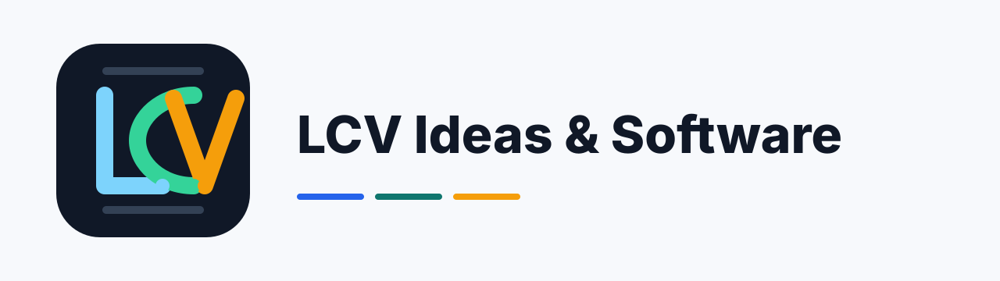

Sem CLI
Os peers sao acionados por API/SDK oficial. Nenhum terminal ou shell de agente.

Servidor MCP SDK/API-only para revisao cruzada entre OpenAI, Anthropic, Google Gemini e DeepSeek, usando SDKs oficiais e decisao por unanimidade.
Os peers sao acionados por API/SDK oficial. Nenhum terminal ou shell de agente.
O runtime consulta os modelos acessiveis pela chave e escolhe o mais capaz documentado.
API keys sao lidas apenas de variaveis de ambiente do Windows.